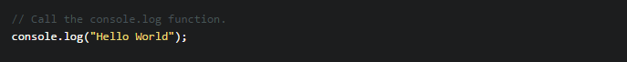
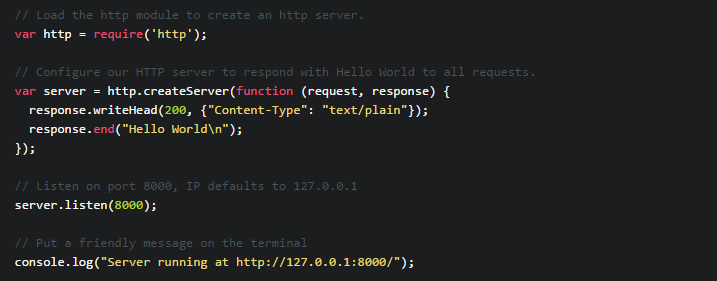

<link rel="stylesheet" type="text/css" href="style.css">
<section id = "HelloNode">
<h2>Hello NODE!</h2>
<p>In programming literature it has become the standard to create a hello world program as the first example. This article will go through a few simple hello world type examples with everything from simple terminal output to an http server that uses an external framework for some semantic sugar.
<br>
Then we'll shift gears and go through a real example that teaches enough to get you up on your feet writing your own web application using node.JS.</p>
<br><br>
<h3>Hello World Examples</h3>
<p>Here are two simple hello world examples. The comments in the code explain how the code works and the text around it explain what it does and how to test it.</p>
<br>
<h4>Hello Console</h4>
<p>This example is about as plain as it can get. It prints the words "Hello World" to the terminal.</p>

<p>You can run this by putting it in a file called "hello-console.js" and running it with node hello-console.js</p>
<br>
<h4>Hello Http</h4>
<p>I'd guess that while it's not the only use case for node.JS, most people are using it as a web application platform. So the next example will be a simple HTTP server that responds to every request with the plain text message "Hello World"</p>

<br>
<p>Thats the basic introduction. For more classes and detailed study visit <a href="https://www.tutorialspoint.com/nodejs/">Tutorials Point</a></p><br>
</section>
